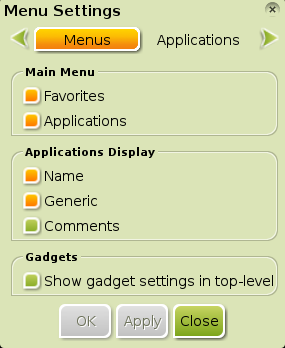

[kliknite na bilo koju sliku za uvećanje]
Ovo je uvod za početnike o prilagođavanju Bodhi Linux Menija. Napravljen je i testiran za Bodhi Linux verzije od 1.0.0 do 1.2.0. Trenutna revizija je napravljena da pokrije promene uvedene u Bodhi Linux verzijama 2.0 do 2.2.- Omiljeni Programi
- Prilagođavanje Bodhi Linux Menija
- Podešavanja Enlightenment Menija
- Dodatne Informacije
Omiljeni Programi
Možete dodati programe koje najčešće koristite ili želite na drugi način brzo da im pristupite u Omlijeni Meni. Lista omiljenih programa se može naći ili u Bodhi Linux Glavnom Meniju (Main Menu) ili desnim klikom na bilo koji prazan prostor na radnu površinu. Na standardnoj(default) instalaciji Bodhi Linux-a, Omiljena opcija neće biti prikazana u Glavnom Meniju niti će desni klik otvoriti Omiljeni Meni. Razlog za to je što programi nisu po standardu(default) dodati u omiljenu listu — to je filozofija Bodhi Linux-a da ne pokušava da pogodi šta korisnik želi i da održava stvari što minimalnije i da pusti da korisnici odluče šta žele.
{kind=link}
Npr. Dodavanje LXTerminal-a u Omiljene
Postoje dva načina za dodavanje programa u Omiljeni Meni. Za prvi, pokrenite program koji želite da dodate, recimo LXTerminal, standardni(default)terminal-emulator u Bodhi Linux-u. Kliknite desnim klikom na ivicu prozora programa(title bar) na vrhu. Ovo će otvoriti meni. Pređite mišem preko imena programa, zatim izaberite opciju Dodaj u Omiljeni Meni(Add to Favorites Menu) (sa ikonicom koja predstavlja bookmark), kao što je prikazano na slici. LXTerminal će se sada pojaviti u vašem Omiljenom Meniju. Neverovatno jednostavno i stvarno elegantno!
Drugi način je takođe jednostavan, samo ima nekoliko koraka više. Iz Bodhi Linux Glavnog Menija (Main Menu), izaberite Settings>All>Apps>Favorite Applications. Ovo pokreće E17-ov prozor Omiljenih Programa. Pod Applications traci(tab), klizite na dole kroz listu dok ne nađete program koji želite da dodate, kliknite na njega da ga istaknete i zatim kliknite na Add dugme. Indikator (u slučaju na slici, narandžasti popunjavač polja) će se pojaviti pored imena programa kao što je slučaj na slici sa Midori. Kliknite Apply a zatim OK. Program će sada biti dodat u vašu listu Omiljenih i pojaviti se u Omiljenom Meniju.
{kind=link}
Napomena:
Indikator varira od teme do teme. Plava tačka je indikator na Standardnoj(Default) Temi i samim tim, najčešći.
 Da uklonite program iz Omiljenog Menija, pokrenite prozor
Omiljeni Programi (Favorite Applications) kao gore. Idite na polje Order. Nađite program koji želite da uklonite, kliknite da ga naglasite i zatim kliknite Remove dugme.
Sada kliknite Apply a zatim OK.
Program je sada uklonjen iz vašeg Omiljenog Menija.
Da uklonite program iz Omiljenog Menija, pokrenite prozor
Omiljeni Programi (Favorite Applications) kao gore. Idite na polje Order. Nađite program koji želite da uklonite, kliknite da ga naglasite i zatim kliknite Remove dugme.
Sada kliknite Apply a zatim OK.
Program je sada uklonjen iz vašeg Omiljenog Menija.
Ako ste strastven korisnik Omiljenog Menija i često koristite mnogo programa, možete primetiti da vaša lista u Omiljenom Meniju postaje duga i možete da poželite drugačiji raspored, možda da one programe koje najviše koristite postavite na vrh liste. Naravno, E17 omogućava način na koji možete promeniti raspored programa u listi. Ponovo pokrenite E17 Omiljeni Programi (Favorite Applications), i još jednom kliknite na polje Order , kao na slici gore. Nađite program koji želite da pomerite i kliknite da ga naglasite. Sada kliknite bilo Up ili Down dugme da ga pozicionirate gde želite da vam se nalazi u meniju. Ako je potrebno, isto možete ponoviti za jedan ili više programa. Jednom kada je izabran željeni raspored, kliknite Apply a zatim OK.
Prilagođavanje Bodhi Linux Menija
E17 ima jedinstven pristup za poslove ispravljanja, dodavanja i uklanjanja polja u meniju. Umesto da ponudi poseban program za promenu polja u meniju, mogućnost grafičke ispravke polja u meniju je ugrađena u sam E17. Da bi videli kako, hajde da proučimo proces dodavanja programa u Glavni Meni (Main Menu).
Dodavanje Programa
Postoji nekoliko slučajeva kada ćete možda morati ručno da dodate program u Glavni Meni (Main Menu). Najčešće se to odnosi na većinu komandno-linijskih (command-line) programa, jer oni obično ne moraju imati meni ulaze. Još ređe, možete da instalirate program sa grafičkim korisničkim interfejsom koji se ne pojavljuje u meniju, verovatno zbog razloga na koji je program spakovan. Ovo se, međutim, retko dešava, tako da ćemo o ovome diskutovati kasnije a sada ćemo usmeriti pažnju na dodavanje komandno-linijskog programa, što je češći slučaj. Primer koji ćemo mi uzeti je nano, jednostavan tekst editor za rad u terminalima.
Prvo, dodaćemo meni unos za nano, što se radi kreiranjem .desktop fajla(pokretača) za njega. Idite na Main Menu>Settings>All>Apps>Personal Application Launchers. Izaberite Add, što će otvoriti prozor Uređivač Unosa za Radnu Površinu (Desktop Entry Editor), i popunite sledeće:
Osnovno Polje (The Basic Tab)
- Ime: Nano (ime koje želite da se pojavi u Meniju)
- Komentar: Komandno-linijski tekst-editor (ovo može biti šta god želite)
- Program (Aplikacija): nano (komanda koja će se koristiti za pokretanje programa iz terminala)
- Ime: Nano (ime koje želite da se pojavi u Meniju)
Polje za Ikonicu (The Icon Tab)
- Ikonica: ako znate ime ikonice koju želite da koristite iz seta ikonica koji trenutno koristite, možete je jednostavno uneti ovde. Međutim, ako želite da izaberete vašu ličnu ikonicu, kliknite na prazan kvadratić.
Ovo će otvoriti prozor Izaberite Ikonicu (Select an Icon). Odatle, možete upravljati i izabrati sliku koju želite da koristite. Za sada, samo otkucajte tekst-editor za standardnu(default) sliku tekst-editora iz vašeg seta ikonica.
- Ikonica: ako znate ime ikonice koju želite da koristite iz seta ikonica koji trenutno koristite, možete je jednostavno uneti ovde. Međutim, ako želite da izaberete vašu ličnu ikonicu, kliknite na prazan kvadratić.
Ovo će otvoriti prozor Izaberite Ikonicu (Select an Icon). Odatle, možete upravljati i izabrati sliku koju želite da koristite. Za sada, samo otkucajte tekst-editor za standardnu(default) sliku tekst-editora iz vašeg seta ikonica.
Opšte Polje (The General Tab)
- Opšte ime: Editor
- Kategorije: Uslužni Program (Utility); Editor;
- MIME Type: text/plain;
- Opšte ime: Editor
Polje za Opcije (The Options Tab)
- Čekirajte Pokreni u Terminalu ("Run in Terminal") i Prikaži u Menijima ("Show in Menus").
- Čekirajte Pokreni u Terminalu ("Run in Terminal") i Prikaži u Menijima ("Show in Menus").
Kada ste završili sa pravljenjem ulaza, kliknite Apply, zatim Close. Ovo kreira .desktop fajl za nano na lokaciji /.local/share/applications vašeg home direktorijuma, koji daje instrukcije da se pojavi u Menijima i da se pokrene u terminalu kada se klikne. Sada će Nano biti u meniju pod Accessories. (Možda ćete morati da izaberete Restart iz Main Menu>Enlightenment da bi osvežili Enlightenment i videli odmah sve promene.)
Sada ćemo prodiskutovati o tome kako dodati program koji ima grafički korisnički interfejs. Prvo, moramo otvoriti program. Za naš primer, uzećemo Leafpad, vrlo jednostavan, grafički tekst-editor koji je instaliran u Bodhi Linux-u. Postoje tri ili više načina za otvaranje programa, čak iako se program ne pojavljuje u Glavnom Meniju (Main Menu). Program možete pokrenuti iz terminala ili naći fajl za program i pokrenuti ga kliktanjem na njega. Ali, mi ćemo upotrebiti modul Everything da ga otvorimo:
 Prvo, moramo da pokrenemo Pokreni Sve (Run Everything).
Može se naći u Glavnom Meniju (Main Menu) ili pokrenuti preko prečica na tastaturi sa Alt+Esc,
Ctrl+Alt+Space, ili Win+Space.
Kada se pokrene, počnite da kucate 'Leafpad' i čim se pojavi, upravljajte do njega strelicama i pritisnite enter da ga pokrenete.
Prvo, moramo da pokrenemo Pokreni Sve (Run Everything).
Može se naći u Glavnom Meniju (Main Menu) ili pokrenuti preko prečica na tastaturi sa Alt+Esc,
Ctrl+Alt+Space, ili Win+Space.
Kada se pokrene, počnite da kucate 'Leafpad' i čim se pojavi, upravljajte do njega strelicama i pritisnite enter da ga pokrenete.
Kada se Leafpad pokrene, desni klik na njegovu ivicu prozora(title bar) na vrhu.
Izaberite Leafpad>Edit Ikonicu. Iskočiće vam prozor Uređivač Unosa za Radnu Površinu (Desktop Entry Editor) kao na slici ispod:

Kliknite na Opcije (Options), i videćete da je opcija Prikaži u Menijima (Show In Menus) selektovana. Ako dodajete program koji nije automatski dodat u Glavni Meni (Main Menu), možete selektovati opciju Prikaži u Menijima (Show In Menus), zatim kliknite Apply pa Close. Sada će se vaš program pojaviti u Glavnom Meniju (Main Menu) i drugim menijima gde treba da bude vidljiv. (Kao što je ranije rečeno, možda ćete morati da izaberete Restart iz Main Menu>Enlightenment da bi videli promene.)
Uklanjanje Programa
Sada kada ste videli kako da upotrebite Uređivač Unosa za Radnu Površinu (Desktop Entry Editor) trebalo bi da bude očigledno kako da uklonite ulaz iz menija. Pokrenite program koji želite da uklonite, desni klik na njegovu ivicu prozora (title bar), i izaberite [ime-programa]([application-name])>Edit Icon. Iskočiće vam Uređivač Unosa za Radnu Površinu (Desktop Entry Editor), pa kliknite na Opcije (Options) i zatim dečekirajte Prikaži u Menijima (Show In Menus) a zatim kliknite Apply pa Close.
Podešavanja Enlightenment Menija

{kind=link}
Postoji još jedna alatka za promenu podešavanja Bodhi Linux menija u E17 koju ćemo da razmotrimo. To je Podešavanje Menija (Menu Settings) dijalog, prikazan na slici desno. Da otvorite ovaj prozor, otvorite Glavni Meni (Main Menu) i zatim izaberite Settings>All>Menus>Menu Settings.
Prozor Podešavanje Menija (Menu Settings) ima četiri trake(tabs): Meniji (Menus), Programi (Applications), Autoklizač (Autoscroll), i Raznovrsno(Ostalo) (Miscellaneous). Traka (tab) Meniji (Menus) je otvorena po standardu(default). Ova traka(tab) je podeljena na tri podsekcije:
Glavni Meni (Main Menu)
Odabir ili uklanjanje unosa ovde će prikazati ili neće prikazati izabranu podsekciju u Glavnom Meniju (Main Menu).Prikaz Programa (Applications Display)
Odabir ili uklanjanje unosa ovde će izmeniti na koji način je program prikazan u E17 menijima. Možete izabrati ime programa, njegovo generičko ime, i/ili programov komentar. Ovi unosi su isti kao oni koji se pojavljuju u Uređivaču Unosa za Radnu Površinu (Desktop Entry Editor) i naravno mogu se izmeniti tamo ako je potrebno.Gedžeti (Gadgets)
Ova osobina (feature) je zastarela i nema razlike da li je uključena ili isključena.
Napomena: Da bi bili sigurni da su promene izvršene nakon bilo kojih izmena u traci(tab)
Meni (Menu) ili bilo kojoj drugoj traci(tab) u prozoru Podešavanje Menija (Menu Settings) proverite da li ste kliknuli na
Apply ili promene neće imati efekta.
Kliktanjem na traku(tab) Programi (Applications) u prozoru Podešavanje Menija (Menu Settings) omogućava vam da izaberete koji izvor menija sistem koristi da prikaže podmeni Programi (Applications). Na standardnoj (default) instalaciji Bodhi Linux-a, izbori su Enlightenment i Lxde Programi (Applications). Jedina razlika je u xml fajlu koji koristi za prikaz menija Programi (Applications menu); Nema nikakve vidljive razlike, pošto je krajnji rezultat isti.
Preostale dve trake(tabs), Autoklizač (Autoscroll) i Raznovrsno(Ostalo) (Miscellaneous), vam omogućavaju da podesite različite aspekte ponašanja E17 menija. Najbolji način da vidite šta rade ova različita podešavanja je da se poigrate sa njima.
Dodatne Informacije
Neka polja u podmeniju su prilično kompleksna da garantuju poseban članak koji opisuje njihovo korišćenje:
- Podešavanja za Enlightenment (Enlightenment Settings): Detaljan pregled svih E17 Podešavanja.
- Sve Modul (The Everything Module): Pregled osnovne upotrebe Pokreni Sve Modula (the Run Everything Module).
- Tema Programa (Application Theme): Kontroliše izgled GTK programa i omogućava izmenu između setova ikonica.
Neke malo naprednije teme nisu ovde bile pokrivene:
- Organizovanje podmenija pod podmenijima menija Programa.
- Možda više.